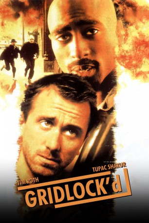
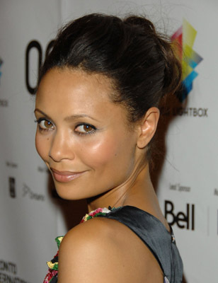
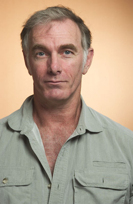
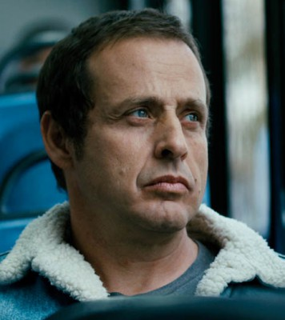

#7758 Gridlock'd - Voll drauf!
Alternativ: Gridlock'd
 
 IMDB-Wertung: 7.0 / 10
IMDB-Wertung: 7.0 / 10  Metascore: 0
Metascore: 0 
Drama aus dem Jahr 1997 mit Tim Roth und Tupac Shakur, der unmittelbar nach den Dreharbeiten erschossen wurde. Die beiden Musiker Ezekiel Whitmore und Alexander Rawland wollen ein Drogenentzugsprogramm mitmachen, nachdem ihre Mitmusikerin Barbara nach einer Überdosis ins Koma gefallen ist. Die beiden Freunde werden jedoch abgewiesen und irrtümlich in einen Mordfall verwickelt.
Jahr: 1997
Dauer: 91 Minuten
FSK: 16
Land: USA Studio: ITonspuren: DTS - ,
Untertitel: Deutsch,
Auflösung: 1080p (1440x1080) Größe: 8949 MB
Genre: Drama, Komödie, Krimi
Regisseur: Vondie Curtis-Hall
Drehbuch: Vondie Curtis-Hall
Soundtrack: Stewart Copeland
Darsteller:
- Tupac Shakur als Ezekiel 'Spoon' Whitmore
 Tim Roth als Alexander 'Stretch' Rawland
Tim Roth als Alexander 'Stretch' Rawland-  Thandie Newton als Barbara 'Cookie' Cook
- Charles Fleischer als Mr. Woodson
 Howard Hesseman als Blind Man
Howard Hesseman als Blind Man James Pickens Jr. als Supervisor
James Pickens Jr. als Supervisor-  John Sayles als Cop #1
 Tom Towles als D-Reper's Henchman
Tom Towles als D-Reper's Henchman- Tom Wright als Koolaid
- Debbie Zaricor als Clerk
 Mik Scriba als Officer #1
Mik Scriba als Officer #1 Lucy Liu als Cee-Cee
Lucy Liu als Cee-Cee-  Richmond Arquette als Resident Doctor
 Debra Wilson als Medicaid Woman #2
Debra Wilson als Medicaid Woman #2 Rusty Schwimmer als Medicaid Nurse
Rusty Schwimmer als Medicaid Nurse Elizabeth Peña als Admissions Person
Elizabeth Peña als Admissions Person- Brad Spencer als Paramedic #1
- Tracy Vilar als Screaming Woman
- Roslyn McKinney als Female Clerk
 Kasi Lemmons als Madonna
Kasi Lemmons als Madonna Vondie Curtis-Hall als D-Reper
Vondie Curtis-Hall als D-Reper Bokeem Woodbine als Mud (uncredited)
Bokeem Woodbine als Mud (uncredited)- Eric Payne als Cop #2
- James Shanta als Patrolman #1
- Jim O'Malley als Patrolman #2
- George Poulos als Chuck
- Billie Neal als Medicaid Woman #1
- Joey Dente als Vendor
- Darryl Jones als Panhandler
- Jasen Govine als Medicaid Security Guard
- Tim Truby als Man with Directions
- Venessia Valentino als Woman in ER
 Ron Cummins als Man in ER
Ron Cummins als Man in ER- Rory J. Shoaf als Paramedic #2
- Roderick Garr als Welfare Security Guard
- William Long Jr. als Right Wing TV Show Host
- Mark Ericson als Bill the Anchor Man
- Tonia Rowe als Woman on TV
- Lynn Blades als Alexia Cruz
- Henry Hunter Hall als Child
- Claudia Vazquez als Fourth Supporting (uncredited)
- Coffee Wright als Welfare recipient (uncredited)
Datei: X:\1997\Gridlock'd - Voll drauf! (1997, FSK16, 1440x1080).mkv seit 15.12.2017
Festplatte: HD 1996-2002
 Es gibt insgesamt 83 Filme in der Gruppe '1997'
Es gibt insgesamt 83 Filme in der Gruppe '1997'